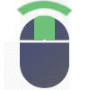

— Search Actions —

Shift + 
Ctrl + 
Quick Menu disabled on addons.mozilla.org
Context Menu will be enabled if Quick Menu fails to open
Context Menu will be enabled if Quick Menu fails to open
— Search Actions —



Shift
+ 
Ctrl
+ 
Alt
+ 
— Look & Layout —
?
?
?
— Opening & Closing —
??
?
— Position —
Horizontal Offset
?
Vertical Offset ?
Vertical Offset ?
choose where menu appears
— Tools —
click to disable | drag to re-order
Import Search Engines
Install a tiny open-source app to manage your search engine list automatically using Firefox's Native Messaging API. This app only runs when called by ContextSearch.
Import your search engine list by browsing to your Firefox search engines file. You will need to manually import your list when you add or remove search engines.